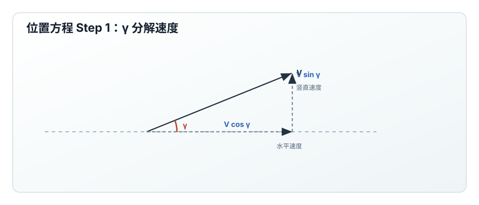
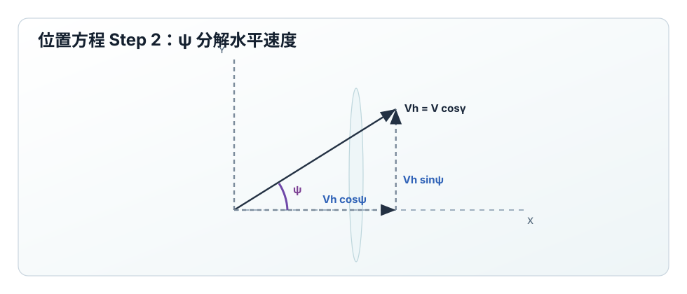
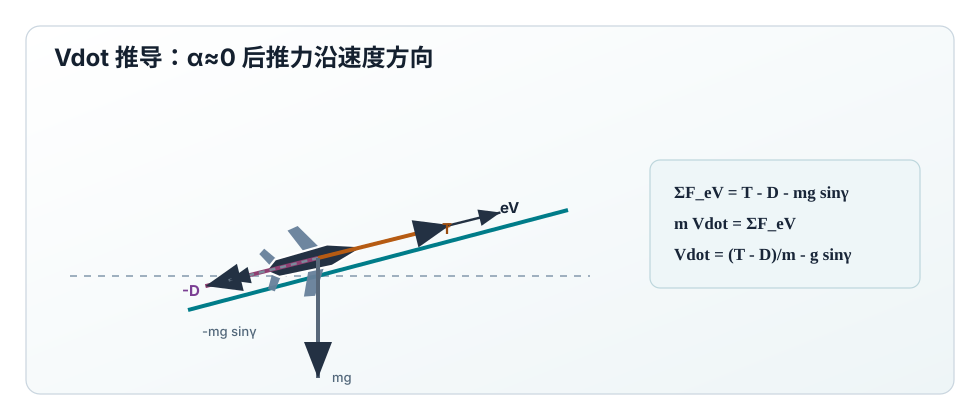
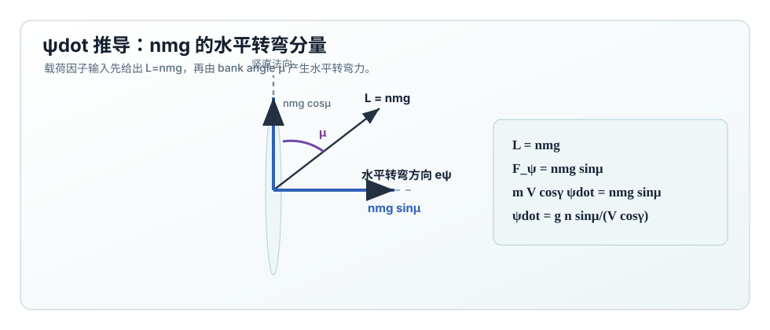
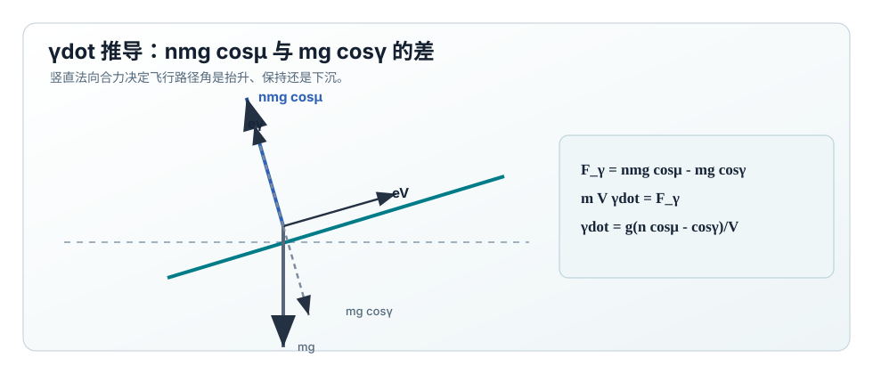
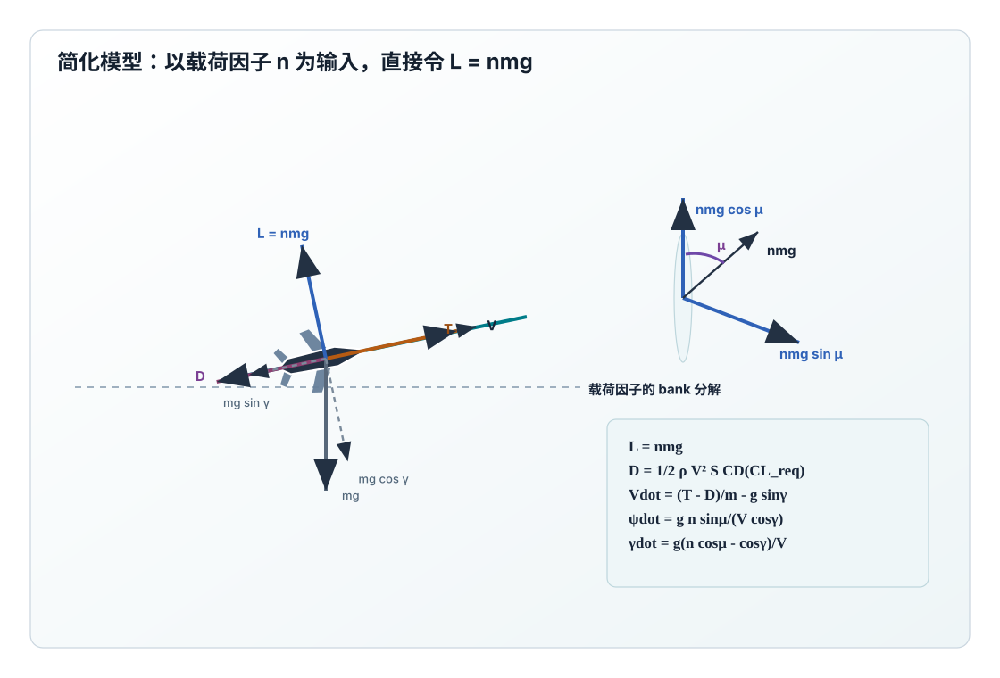

状态与控制
状态
\[
\mathbf{x} =
\begin{bmatrix}
X & Y & h & V & \psi & \gamma & m
\end{bmatrix}^{T}
\]
控制输入
\[
\mathbf{u}_{n} =
\begin{bmatrix}
T & \mu & n_{\mathrm{cmd}}
\end{bmatrix}^{T}
\]
这里 \(n_{\mathrm{cmd}}\) 是命令值；stall 后应使用 \(n_{\mathrm{actual}}\)。
核心假设与方程总览
简化模型使用两个关键近似：
\[
\alpha\approx0,\quad
T\sin\alpha\approx0,\quad
L=nmg
\]
于是：
\[
\dot X=V\cos\gamma\cos\psi,\quad
\dot Y=V\cos\gamma\sin\psi,\quad
\dot h=V\sin\gamma
\]
\[
\boxed{
\dot V=
\frac{T-D}{m}-g\sin\gamma
}
\]
\[
\boxed{
\dot\psi=
\frac{g}{V\cos\gamma}n\sin\mu
}
\]
\[
\boxed{
\dot\gamma=
\frac{g}{V}(n\cos\mu-\cos\gamma)
}
\]
\[
\dot m=0
\]
位置方程推导
简化模型和完整模型使用同一套轨迹状态，因此位置方程完全来自速度矢量的几何分解。
速度大小为 \(V\)，飞行路径角为 \(\gamma\)，所以水平速度大小为：

第一步：\(\gamma\) 只决定速度矢量在水平面和竖直方向上的投影。

第二步：\(\psi\) 只作用在水平速度 \(V\cos\gamma\) 上，把它分到 \(X,Y\) 方向。
\[
V_{\mathrm{horizontal}}=V\cos\gamma
\]
航向角 \(\psi\) 再把水平速度分到两个水平轴：
\[
\dot X=V\cos\gamma\cos\psi
\]
\[
\dot Y=V\cos\gamma\sin\psi
\]
竖直方向由 \(V\) 在竖直轴上的投影得到：
\[
\boxed{\dot h=V\sin\gamma}
\]
\(\dot V\) 推导：切向力平衡
简化模型令 \(\alpha\approx0\)，所以推力基本沿速度方向：

当 \(\alpha\approx0\) 时，切向推力近似为 \(T\)，所以切向合力是
\(T-D-mg\sin\gamma\)。
\[
T\cos\alpha\approx T,\quad T\sin\alpha\approx0
\]
沿速度方向的力包括正向推力 \(T\)、反向阻力 \(-D\)，以及重力在速度方向上的分量
\(-mg\sin\gamma\)。因此：
\[
m\dot V=T-D-mg\sin\gamma
\]
\[
\boxed{
\dot V=\frac{T-D}{m}-g\sin\gamma
}
\]
\(\dot\psi\) 推导：由 \(n\) 指定水平转弯力
载荷因子定义为：

左侧说明航向变化对应 \(a_\psi=V\cos\gamma\dot\psi\)，右侧说明 bank 后只有
\(nmg\sin\mu\) 进入水平转弯方向。
\[
n=\frac{L}{mg}
\]
因此简化模型直接令：
\[
L=nmg
\]
航向角变化对应水平转弯加速度：
\[
a_{\psi}=V\cos\gamma\dot\psi
\]
bank angle \(\mu\) 把升力倾斜，其中水平转弯方向的分量为：
\[
L_{\psi}=L\sin\mu=nmg\sin\mu
\]
对水平转弯方向写牛顿第二定律：
\[
mV\cos\gamma\dot\psi=nmg\sin\mu
\]
\[
\boxed{
\dot\psi=
\frac{g}{V\cos\gamma}n\sin\mu
}
\]
\(\dot\gamma\) 推导：由 \(n\) 指定竖直法向力
飞行路径角 \(\gamma\) 的变化对应竖直平面内、垂直于速度方向的加速度：

\(\gamma\) 是速度矢量在竖直平面内的转动，因此加速度尺度是 \(V\dot\gamma\)，
受 \(nmg\cos\mu\) 与 \(mg\cos\gamma\) 的差控制。
\[
a_{\gamma}=V\dot\gamma
\]
升力在竖直法向方向上的分量是 \(L\cos\mu=nmg\cos\mu\)。
重力在该方向上的反向分量是 \(mg\cos\gamma\)。因此：
\[
L_{\gamma}=nmg\cos\mu
\]
\[
W_{\gamma}=-mg\cos\gamma
\]
对竖直法向方向写牛顿第二定律：
\[
mV\dot\gamma=nmg\cos\mu-mg\cos\gamma
\]
\[
\boxed{
\dot\gamma=
\frac{g}{V}(n\cos\mu-\cos\gamma)
}
\]
这也解释了为什么协调水平转弯需要 \(n\cos\mu\approx1\)：
这样 \(\dot\gamma\approx0\)，飞机不会因为 bank 后竖直升力不足而下沉。

力分解图由 Python 脚本生成。简化模型把法向力写成 \(L=nmg\)，再通过 bank angle
\(\mu\) 分解为转弯方向和飞行路径角方向的分量。
简化模型中 \(D\) 怎么算
即使简化模型直接输入 \(n\)，阻力仍然需要空气动力系数。因为 \(L=nmg\)，可以得到所需升力系数：
\[
C_{L,\mathrm{req}}
=
\frac{L}{qS}
=
\frac{2mgn_{\mathrm{cmd}}}{\rho V^2S}
\]
\[
C_D = C_{D0}+kC_{L,\mathrm{req}}^2,\quad
D=\frac12\rho V^2SC_D
\]
如果发生 stall，\(C_{L,\mathrm{req}}\) 不能继续被无条件实现，阻力也应加入 stall penalty。
与完整 alpha 模型的连接
简化模型虽然不输入 \(\alpha\)，但可以从 \(n_{\mathrm{cmd}}\) 反推“为了实现该载荷因子所需的攻角”：
\[
C_{L,\mathrm{req}}
=
\frac{2mgn_{\mathrm{cmd}}}{\rho V^2S}
\]
\[
\boxed{
\alpha_{\mathrm{req}}
=
\frac{C_{L,\mathrm{req}}-C_{L0}}{C_{L\alpha}}
}
\]
因此简化模型可以把 \(\alpha_{\mathrm{req}}\) 当作诊断量和约束量。
反过来，完整模型可由
\(n_{\mathrm{eq}}=L/(mg)\)
映射到简化模型。
简化模型的 stall 条件
因为简化模型的输入是 \(n_{\mathrm{cmd}}\) 而不是 \(\alpha\)，stall 判据应写成
“所需气动能力超过上限”：
\[
\boxed{
C_{L,\mathrm{req}} \ge C_{L,\max}
}
\]
\[
\boxed{
\alpha_{\mathrm{req}}\ge\alpha_{\mathrm{crit}}
}
\]
等价地，可以定义当前状态下最大可实现载荷因子：
\[
n_{\max}
=
\frac{\frac12\rho V^2SC_{L,\max}}{mg}
\]
\[
\boxed{
n_{\mathrm{cmd}}>n_{\max}\Rightarrow\mathrm{stall}
}
\]
为了让 stall 真实改变轨迹，动力学中应使用：
\[
n_{\mathrm{actual}}=\min(n_{\mathrm{cmd}},n_{\max})
\]
然后把方程中的 \(n\) 替换为 \(n_{\mathrm{actual}}\)，并增加阻力惩罚：
\[
C_{D,\mathrm{actual}}
=
C_{D0}+kC_{L,\mathrm{actual}}^2+
C_{D,\mathrm{stall}}\max(0,\alpha_{\mathrm{req}}-\alpha_{\mathrm{crit}})^2
\]
只把 \(n\) 限幅会让飞机“拉不动”；再增加 stall drag 才会出现更明显的减速和下沉。
这比单纯输出 stall warning 更适合验证轨迹响应。
简化模型验证用控制参数
| 验证目标 | 控制设置 | 预期动力学响应 |
|---|
| 平飞保持 |
\(\mu=0\)，\(n=1\)，\(T\approx D\) |
\(\dot\gamma\approx0\)、\(\dot V\approx0\)。这是最基础的 sanity check。 |
| 协调水平转弯 |
\(\mu=30^\circ\)，\(n=1/\cos\mu\)，\(T\approx D\) |
\(\dot\psi>0\)，且 \(n\cos\mu\approx1\)，所以 \(\dot\gamma\approx0\)。 |
| 坡度不足载荷 |
\(\mu=30^\circ\)，\(n=1\)，\(T\approx D\) |
\(n\cos\mu<1\)，所以 \(\dot\gamma<0\)，飞机应开始下沉。 |
| 低速高载荷 stall |
降低 \(V\) 或升高 \(n_{\mathrm{cmd}}\)，使 \(n_{\mathrm{cmd}}>n_{\max}\) |
使用 \(n_{\mathrm{actual}}\) 后，\(\dot\psi\) 和 \(\dot\gamma\) 小于命令值；若加入 stall drag，\(\dot V\) 也应明显变负。 |